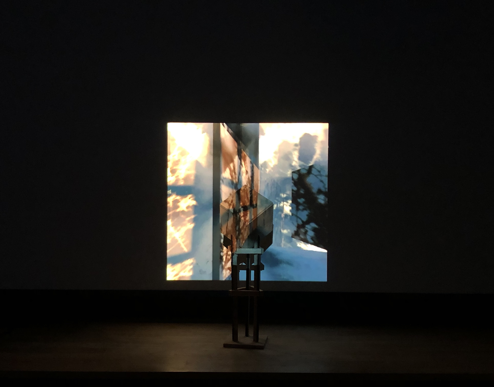

[Github Repo] [Notion writeup]
A wireless art installation piece, reflecting on memory and the passage of time. The memory-box calibrates itself to the ambient light levels and senses when it is touched or moved. Visuals change according to deviation from stillness and darkness.
